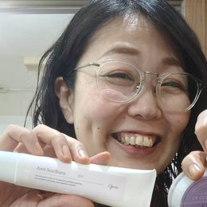
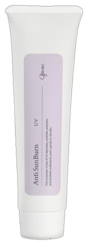
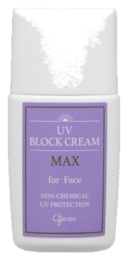
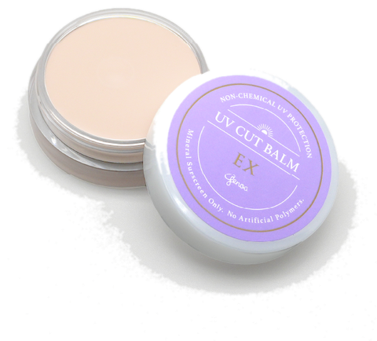

INTRO
日焼け止めこそ、成分を見てほしい
日焼け止めは、化粧品の中でも特に「肌に長時間のせ続けるもの」です。朝塗って、塗り直して、夕方まで。しかも顔だけでなく首や腕、ときには全身に。だからこそ、シャンプーやスキンケアと同じように——いえ、それ以上に——中身を選ぶことが大切だと、つむぎは考えています。
選ぶときのポイントは4つ。順番にお話しします。
POINT 1
① 紫外線吸収剤の危険性
市販の日焼け止めの多くに使われているのが「紫外線吸収剤」です。メトキシケイヒ酸エチルヘキシルなどが代表的な成分で、紫外線を肌の上で吸収し、化学反応によって熱などのエネルギーに変えて放出します。
問題は、その正体。紫外線吸収剤の多くはフェノール系・ベンゼン系の化合物で、もともとは印刷インクの退色防止剤として使われていた物質です。発がん性や環境ホルモン作用が指摘されているものもあり、肌の上で化学反応を起こし続けるため、かぶれや刺激の原因にもなります。
海外では、サンゴ礁や海の生態系への悪影響が確認され、特定の吸収剤成分を法律で禁止する国や地域も増えています。肌にも環境にも、負担の大きい成分なのです。
POINT 2
② 紫外線吸収剤と紫外線散乱剤の違い
紫外線を防ぐ成分には、もうひとつ「紫外線散乱剤」があります。酸化亜鉛・酸化チタン・酸化鉄などのミネラル（鉱物）粒子で、紫外線を物理的に反射して跳ね返します。日傘をさしたり、シャツを羽織って肌を守るのと同じ考え方です。
| 紫外線散乱剤 🌿 | 紫外線吸収剤 ⚠️ | |
|---|---|---|
| 防ぎ方 | ミネラル粒子が紫外線を反射して跳ね返す | 紫外線を吸収し、肌の上で化学反応を起こして熱に変える |
| 主な成分 | 酸化亜鉛・酸化チタン・酸化鉄（毒性は見られないとされ、食品や医薬品にも使われる） | メトキシケイヒ酸エチルヘキシルなど（フェノール系・ベンゼン系化合物） |
| 肌への負担 | 少ない。赤ちゃんや敏感肌にも使いやすい | かぶれ・刺激の原因になることがある |
| 環境への影響 | サンゴへの影響が少ないとされる | サンゴ礁への悪影響が確認され、禁止する国も |
| 使い心地 | 白浮きしやすい・ややこっくり | 透明でのびがよく、SPF値を高くしやすい |
見分け方のコツ
成分表示を見て、酸化亜鉛・酸化チタン・酸化鉄なら散乱剤。それ以外のカタカナの長い成分名が並んでいたら吸収剤の可能性が高いです。「透明ジェルタイプ」「SPF50以上」「のびがよくてサラサラ」——使い心地が良すぎるものほど、吸収剤が使われていることが多いので要注意。「ノンケミカル」「紫外線吸収剤不使用」の表示も目印になります。
POINT 3
③ 基材の違い——ポリマー系のデメリット
紫外線カット成分だけでなく、それを肌にのせるための「基材（ベース）」にも違いがあります。市販の日焼け止めの多くは、合成ポリマー（シリコーンやアクリル系樹脂など）を基材にしています。
合成ポリマーは、汗や水に強い膜を肌の上につくります。「ウォータープルーフ」「汗に強い」「サラサラ続く」——この使い心地の正体がポリマーの膜です。便利に聞こえますが、デメリットもあります。
- 膜が強力なぶん、石けんでは落ちにくく、専用クレンジングや強い洗浄剤が必要になる
- 落とすときの強い洗浄で、肌のバリア（角質層）まで一緒に壊してしまう
- 肌を覆い固めるため、皮膚呼吸ならぬ皮脂や汗の自然な流れを妨げ、肌が本来の働きをしにくくなる
- 「塗っている間はきれい、落とすとカサカサ」の繰り返しで、肌が少しずつ弱っていく
POINT 4
④ 界面活性剤不使用のメリット・デメリット
クリームは本来、水と油を混ぜてつくります。このとき使われるのが界面活性剤。合成界面活性剤は乳化力が強く便利な反面、使い続けると肌のバリア機能を少しずつ壊してしまうことは、スキンケアのページでもお話しした通りです。
メリット
- 肌のバリア（角質層）を壊さないので、毎日塗り続けても肌への負担が少ない
- 敏感肌や肌の弱い方、赤ちゃんにも使いやすい
- 石けんですっきり落とせて、クレンジングによる負担も減らせる
デメリット
- 乳化剤に頼らないぶん、のびがやや重く、塗るのに少しコツがいる
- 強力な耐水膜はつくらないので、汗をかいたり水に入ったら塗り直しが必要
- 「一日中落ちない」ような便利さはない
デメリットは、言いかえれば「肌に居座り続けない」ということ。こまめに塗り直す手間はありますが、それが肌をいたわるということだと、つむぎは考えています。
KURUMI'S CHOICE
くるみのおすすめ日焼け止め3つ🌻

スタッフ
くるみ
こんにちは、つむぎスタッフのくるみです！ここからはわたしが、実際に毎日使っているゼノアの日焼け止め3つを紹介します。ぜんぶ紫外線吸収剤ゼロ・合成ポリマーゼロ・合成界面活性剤ゼロ。シーンで使い分けるのがくるみ流です✌️

アンティサンバン
全身用日やけ止めクリーム／60g・¥2,860（税込）
携帯しやすいチューブタイプで、外出先での塗り直しにも便利。赤ちゃんや敏感肌の方にも使える、やさしい処方の定番です。
くるみは朝、顔と首にアンティサンバンを塗って、上から酸性パウダーをふわっと重ねるのが毎日のセット。パウダーでさらさらになって、化粧下地代わりにもなるよ！

UVブロッククリームMAX for Face
日やけ止めクリーム・化粧下地／30mL・¥3,850（税込）
なめらかにのびて明るさを添える、顔用のUV下地。容器の中のステンレスボールを振ってから使うと、最後まで均一に使えます。ベースメイクとの相性も◎。
ハイキングとかピクニックとか、日差しをたっぷり浴びる日はこっち！しっかりカットしてくれるのにお肌が疲れないから、レジャーの日の顔はこれ一択です🌞

UVカットバームEX
全身用日やけ止めバーム／25g・¥2,860（税込）／SPF39.9・PA++++
植物オイルとミツロウベースのバームタイプ。無香料で、防腐剤・界面活性剤も不使用のいちばんシンプルな処方。油分が肌をしっとり包んで、強い日差しから守ります。
海やプール、川遊びのときはバーム！油分ベースだから水をはじいてくれるの。ポリマーの膜じゃないのに水場に強いのがえらい…！あがったら塗り直してね🏖️
くるみの使い分けまとめ
普段の日
アンティサンバン＋酸性パウダー
通勤・買い物・サロンワークの毎日はこれ。塗り直しもチューブでさっと。
レジャーの日
UVブロッククリームMAX
日差しをたっぷり浴びる日のお顔に。下地としてメイクの土台にも。
水場で遊ぶ日
UVカットバームEX
海・プール・川遊びに。油分ベースで水に強い。あがったら塗り直しを。
※ 価格・仕様は2026年7月時点のメーカー情報です。最新の情報は各商品ページでご確認ください。
FROM KEIKO
「防ぐ」ことが「負担」にならないように
紫外線対策は大切です。でも、日焼けを防ぐために肌のバリアを壊してしまっては本末転倒。日焼け止めは「強さ」ではなく「毎日続けられるやさしさ」で選んでほしいと思っています。
白浮きしやすい、のびが重い、塗り直しがいる——散乱剤タイプの弱点は、慣れればぜんぶコツでカバーできます。塗り方のコツはサロンでもお伝えしていますので、気軽に聞いてくださいね。
NEXT